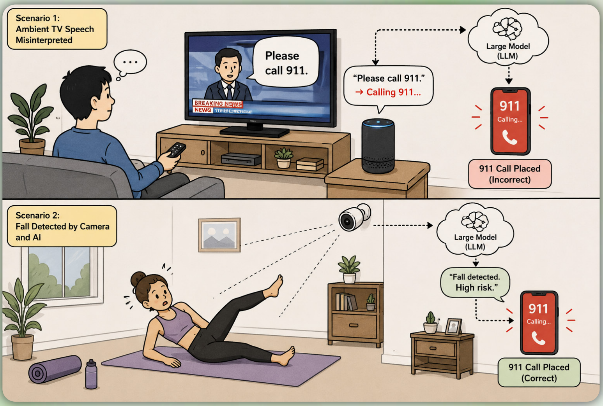
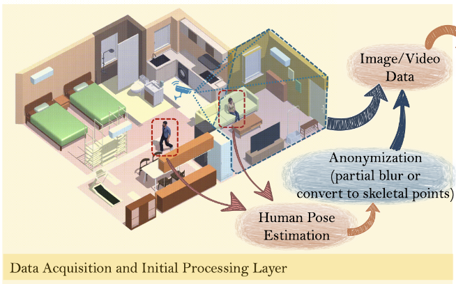
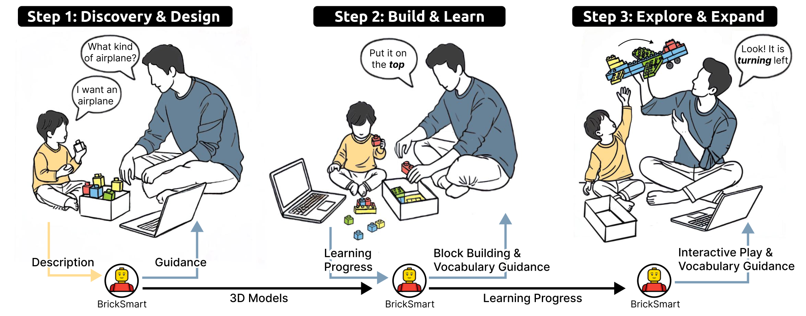

A
Ambient Intelligence
Context-aware intelligent environments that sense, adapt, and support people in everyday life.
Master's student at Tsinghua University
I am a master's student in Information Art & Design at the Academy of Arts & Design, Tsinghua University, and a member of The Future Laboratory. I received my bachelor's degree in Creative Design and Intelligent Engineering from Xinya College, Tsinghua University, in 2024, where I developed an interdisciplinary background spanning automation and product design.
My research interests lie at the intersection of human–AI collaboration and ambient intelligence. I explore how large language models, computer vision, and multimodal interaction can enable intelligent environments that are more perceptive, adaptive, and collaborative in everyday life.
01
A
Context-aware intelligent environments that sense, adapt, and support people in everyday life.
B
Multimodal large language models for contextual perception, reasoning, and human–AI collaboration.
C
Vision-based sensing and reasoning that enable natural interaction in real-world settings.
02



03
This project combines visual models, multimodal LLMs, and reinforcement learning to understand home environments, detect interactions, and predict user intent for longitudinal decision support.
This project develops refreshable tactile devices and related applications to support accessible interaction in education, cognition, and social communication.
This project explores multimodal generation and AI-guided support for LEGO construction, brick reuse, and project-based educational storytelling.